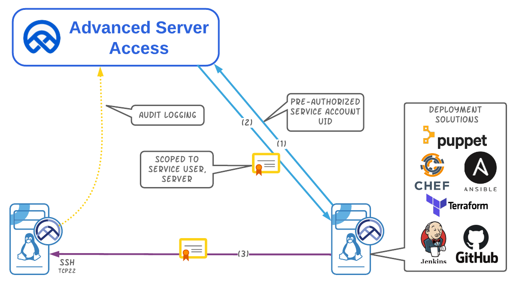

This demo for Name and shows how ASA eliminates the need to manage SSH keys associated with CI/CD pipelines. In this case, we're using GitLabs. The service account used by the gitlab-runner leverages ASA's ephemeral credentialling to authenticate to ASA protected servers. There are no SSH keys to create, deploy, revoke, or rotate, and no passwords to steal.
Thank you for checking out this ASA demo.
Check out the latest deployment artifact here.